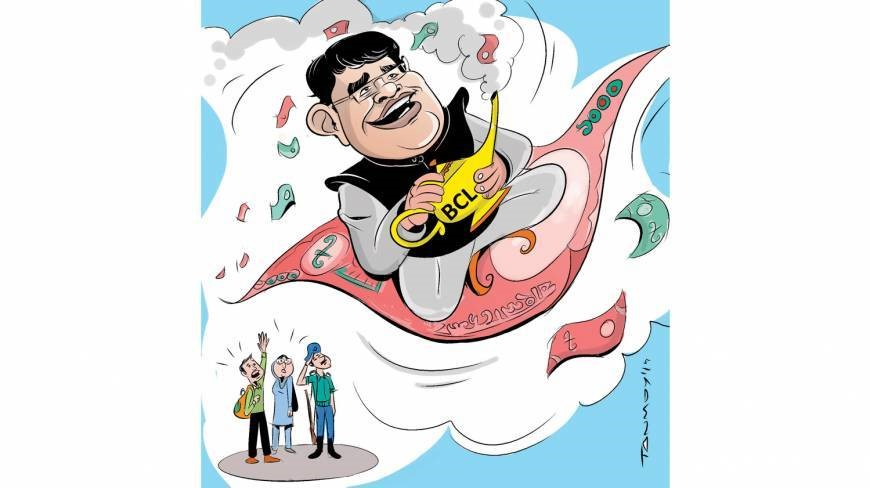

The third in a series looking at the sudden rise in wealth of Chhatra League leaders, focuses on some of the BCL vice-presidents
The veep stakes
Ahmed Zayeef . Dhaka
A Chhatra League vice-president now controls the entire area where he once used to sell shoes on the roadside for a living

For many Chhatra League leaders who hold official posts, the student front of the ruling party has been a stepping stone for rising from decent lives to the ones of luxury, grandeur and power. Even a footpath shoe seller has turned his fortune by rising through the ranks.
Chhatra League Vice-President Reaj Uddin Reaj was once a shoe vendor. He used to sell shoes in a roadside shop in front of Shundorbon Market in the capital's Fulbaria area near Gulistan.
Two shoe vendors from the area narrated how Reaj became a central leader of the rulling party’s student front.
One of them said: “Reaj was one of us. At first he used to sell shoes on the road with us. Then he took a job in a shop near the City Super Market.
“Suddenly, one day we came to know that he had managed a degree from a homeopathy college. Soon he inserted the 'doctor' tag before his name. He also maintained relations with some of the central leaders of Chhatra League,” he said.
A few days they learned that Reaj had got a post in the central committee. “He then established his control over all the roadside shops in the Gulistan area. Now, he owns two flats in capital's Narinda area.
“We [including Reaj] used to have chats after a long day at work. It now seems like a dream when we recall those days and how Reaj's lifestyle has changed overnight.”
Phone call
When contacted, Reaj's reaction was curtly: “If I say you are a fake journalist, will it be right?”
And then he threatened to file a case against this correspondent before he slammed the phone down.
After a few minutes, as this reporter called Reaj again, he said: “Write that I have six flats in the capital and I am the owner of huge property. I do not want to talk to you anymore.”
Plastic fantastic
Reaj Uddin Chowdhury Shumon, another vice-president of Chhatra League, was originally a resident of Chittagong. He is now the owner of a plastic factory in the capital's Mugdapara.
A source from Chittagong said Shumon had earned Tk28-30 lakh by helping a Dhaka-based construction company get a food depot construction work in Cox's Bazar's Jhilonjha. With the money, Shumon set up his own company.
Regarding this, Shumon said over phone: “Things are not like the way you are saying. Now I am in my hometown [Chittagong]. I will talk to you face to face and clarify everything.” But he has never rung back.
Bricking it
Another Vice-President Mukhlesur Rahman Shumon is the owner of a brick kiln in Madaripur. The kiln is located beside the Dhaka-Khulna highway in Pulia area of Vanga Upazila of Madaripur.
A number of people from the area said Shumon had grabbed the land to set up his kiln. Brick-loaded trucks have damaged the road leading to the area. “When we protested, he threatened us with dire consequences. After that, we filed a general diary with the Vanga police station.”
Shumon, however, denied the allegation, saying: “My father was a very rich man. He left huge property worth at least Tk150-200 crore. I have had money to burn. A piece of land for setting up a brick kiln is not a big deal.”
But Harun-Or-Rashid, chairman of Ajimnogor Union Parisad, where Mukhlesur lives told the Dhaka Tribune: “I have known Shumon and his family for a long time. They are well-off but not as rich as he claims. He set up the brick kiln after he became a central leader of Chhatra League.
“He also has a fuel station just opposite the brick field,” Harun said.
Banner year
Vice-President Masud Hasan Turno is the chairman of a digital banner company. His company's office is located in Jhigatola in the capital.
“Turno comes from a very ordinary family. After he secured the post, Turno launched his business. He amassed money by lobbying for jobs and manipulating tenders,” said a Chhatra League central leader who has known Turno for a long time.
Turno, however, said his father had given him the money to start the business. “I do not have any involvement in any kind of lobbying.”
Feet of clay
Vice-President Shahinur Rashid Sohel has a ceramic shop in the capitals Monipuripara just near the Sangsad Bhaban. He is also a director of a popular and well-known university admission test coaching centre in the capital's Mirpur.
Sohel said: “As I am from a lower middle-class family, I had to ensure my livelihood. That is why, from the very beginning of my student life, I got involved with the coaching centre.”
Regarding the ceramic business, he said: “I had very little investment there. But by now I have quit the business.”
According to some leaders and activists, there are many other leaders who have become rich overnight. Many of them own more assets than the two top leaders.
Credit Dhaka Tribune, Link: http://www.dhakatribune.com/politics/2014/sep/26/veep-stakes